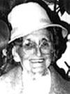

CYRICE DUFOUR
fiche familiale
*******************************************************************************
Cyrice DufourNaissance en déc 1864
Père: Hyppolite DufourMère: Marie-Louise DesbiensMariage le 8 jan 1881 à Métabetchouan, cté Lac-St-Jean
1ère épouse: Rachel DoréeDécès avant 1909 à Roberval, cté Lac-St-Jean
Père: Alphée DoréeMère: Marie Boily
*******************************************************************************
Enfant 1 Charles DufourNaissance: 2 fév 1884
Mariage le 16 oct 1907 à
Notre-Dame-de-l'Immaculée-Conception de Roberval
Conjointe: Prima LarouchePère: Ferdinand LaroucheMère: Clara Simard
-------------------------------------------------------------------------------
Enfant 2 Joseph DufourNaissance: 23 nov 1889
Mariage le 25 sep 1911 à
Notre-Dame-de-l'Immaculée-Conception de Roberval
Conjointe: Bernadette LarochePère: Xavier LarocheMère: Émilie Morissette
-------------------------------------------------------------------------------
Enfant 3 David DufourNaissance: 14 jul 1891
Conjointe: Ethel-Maud Walker
------------------------------------------------------------------------------
Enfant 4 Edgar DufourNaissance: 26 mars 1893
Mariage le 18 nov 1919 à
Notre-Dame-de-l'Immaculée-Conception de Roberval
Conjointe: Émilie FortinPère: Octave FortinMère: Vénérance Vézina
-------------------------------------------------------------------------------
Enfant 5 Charles DufourNaissance: en oct 1894
------------------------------------------------------------------------------
Enfant 6 Armand DufourNaissance: en jan 1899
Mariage le 4 avril 1920 à Péribonka, cté Lac-St-Jean
Conjointe: Albertine SimardPère: Menac SimardMère: Marie Voyer
-------------------------------------------------------------------------------
Enfant 7 Maurice DufourNaissance: en déc 1901
------------------------------------------------------------------------------
|

|
Enfant 8 Arthur Dufourdécède à l'âge de 90 ans. Naissance le 12 sep 1903 à Roberval, cté Lac-St-Jean Décès le 5 fév 1994 à Val-D'Or, cté Abitibi (ses ancêtres)Mariage le 10 avril 1937 à St-Michel-Archange de Rouyn-Noranda Olivine Barriaultdécède à l'âge de 73 ans. n. 20 juin 1908 d. 29 avril 1982 Père: Honoré BarriaultMère:Anna Bourget(sa famille) |
------------------------------------------------------------------------------
Enfant 9 Aimée-Anne-Marie DufourNaissance: en aoû 1906
Mariage le 23 nov 1932 à St-Jean-de-Brébeuf de Roberval
Conjoint: Alphonse Chiasson
*******************************************************************************
Mariage le 28 juin 1909 à
Notre-Dame-de-l'Immaculée-Conception de Roberval
2ème épouse: Éléonore DucheneNaissance: en nov 1868
Père: Joseph DucheneMère: Phébée Fortin
*******************************************************************************